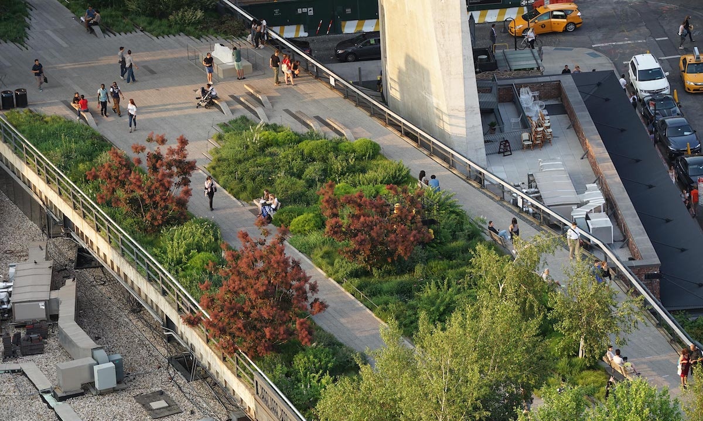

Você já parou para pensar na quantidade de espaços efêmeros que já frequentou e nem se deu conta? Espaços temporários são projetados para durar por um curto período. Entretanto isso não significa que não existam legislações e normas a serem seguidas para a concepção deles, bem pelo contrário. Neste material, você entenderá as razões pelas quais a legislação e as normas técnicas são tão importantes na realização destes projetos.
As leis e os regulamentos existem para garantir a segurança das pessoas que frequentam ou trabalham nos espaços efêmeros. Essas normas incluem requisitos de segurança contra incêndio, acesso para pessoas com deficiência, saídas de emergência, entre outros. As normas técnicas estabelecem os padrões de qualidade e durabilidade aos quais esses projetos temporários devem atender e garantem que esses espaços sejam construídos para resistir ao uso intenso durante o período de sua utilização. Na maioria das vezes, os projetos precisam passar por aprovações governamentais ou municipais. O cumprimento da legislação e das normas técnicas é essencial para garantir que o projeto seja viável e receba as aprovações necessárias.
Perceba então que a legislação e as normas técnicas são essenciais para garantir a segurança, a qualidade e a viabilidade dos projetos de espaços efêmeros. Portanto é fundamental que os profissionais envolvidos nesses projetos estejam cientes e cumpram todas as regulamentações aplicáveis.
A efemeridade desses espaços está intrinsecamente ligada à sua natureza temporária e transitória, pois são projetados para existirem por um curto período, sejam para eventos específicos, sejam para exposições, instalações artísticas ou outras finalidades temporárias. Essa característica apresenta desafios únicos em relação às regulamentações e normas técnicas.
Devido à natureza temporária dos espaços efêmeros, muitas vezes é necessário que eles sejam construídos e desmontados rapidamente, o que pode exigir a conformidade com regulamentações específicas que abordam questões como segurança estrutural, proteção contra incêndio e acessibilidade. Além disso, após sua montagem, é importante garantir que eles permaneçam em conformidade com as regulamentações durante todo o período de utilização. Isso pode envolver inspeções regulares, manutenção adequada e ação imediata em caso de não conformidade. Outro fator relevante é garantir que esses espaços sejam construídos e desmontados de maneira responsável, seguindo diretrizes ambientais e normas técnicas que visam minimizar o impacto ao meio ambiente.
Mesmo que os espaços efêmeros sejam temporários, o planejamento antecipado é essencial para garantir que todos os requisitos regulamentares sejam atendidos durante o período de utilização. Isso inclui a obtenção de licenças e aprovações necessárias, bem como a consideração de normas técnicas relevantes desde a fase de projeto.
A origem do termo “efêmero” é na palavra grega ephémeros, cujo significado é “transitório”, isto é, que apresenta um curto ciclo de vida e têm um prazo definido para sua existência com tempo previsto para começar e terminar (Cunha; Abreu; Lana, 2021). Esses espaços desempenham um papel significativo na sociedade contemporânea, na qual predominam o consumo acelerado e a rápida aquisição e descarte de produtos. Neste contexto, o design de espaços efêmeros ganhou destaque no mercado, uma vez que atende à sua essência passageira, impactando mais indivíduos com menos energia e matéria, além de apresentar baixo custo e rápida concretização (Cunha; Abreu; Lana, 2021).
Os espaços efêmeros permitem a experimentação e a inovação em um ambiente temporário, sem os custos e compromissos associados a espaços permanentes. Muitas vezes esses ambientes servem como laboratórios de ideias e conceitos inovadores, além de oferecerem oportunidades únicas de interação com o público de maneira mais direta e imersiva. Podem contribuir para a revitalização de áreas urbanas subutilizadas, atraindo visitantes, gerando interesse e movimentando economias locais. Também permitem uma maior flexibilidade e adaptabilidade às mudanças rápidas e às tendências emergentes, possibilitando a rápida reconfiguração ou encerramento, caso necessário.
Você deve estar se perguntando o que distingue os espaços efêmeros dos espaços permanentes, não é mesmo?
Para Carnide (2012) e Nishikawa (2016), as principais características do design de espaços efêmeros são: leveza, portabilidade, facilidade de montagem, transitoriedade e economia de recursos.
Em um contexto comparativo, os espaços efêmeros têm uma existência limitada no tempo, enquanto os espaços permanentes são concebidos para durar por um período prolongado ou até mesmo indefinidamente. Outro fator relevante é que os espaços efêmeros são frequentemente projetados para serem flexíveis e adaptáveis, podendo ser montados e desmontados facilmente e muitas vezes sendo reconfigurados para diferentes usos e contextos. Em contraste, os espaços permanentes são geralmente mais rígidos em sua estrutura e função.
Pode-se destacar também que os espaços temporários geralmente são criados com um propósito específico em mente, como a realização de um evento, uma exposição, instalação artística ou experiência imersiva. Eles podem ser projetados para transmitir uma mensagem, contar uma história ou proporcionar uma experiência única aos visitantes. Além disso, devido à sua natureza temporária e muitas vezes experimental, os espaços efêmeros tendem a ser mais ousados, criativos e impactantes em termos visuais e sensoriais, buscando cativar e surpreender o público.
Você sabe o que muda em relação à concepção e à execução dos projetos efêmeros?
Os projetos temporários geralmente têm prazos mais reduzidos e definidos do que os projetos permanentes. Isso exige um planejamento cuidadoso desde o início para garantir que todas as etapas do processo, desde a concepção até a execução, sejam concluídas dentro do cronograma disponível. Além do mais, esses projetos oferecem uma oportunidade única para experimentação e inovação criativa, uma vez que não estão sujeitos às restrições de longo prazo associadas aos projetos permanentes, permitindo, portanto, aos designers e artistas explorarem novas ideias e abordagens de forma mais livre e ousada.
Devido à natureza temporária dos espaços efêmeros, os materiais e métodos de construção utilizados muitas vezes priorizam a facilidade de montagem e desmontagem, bem como a mobilidade, o que envolve o uso de estruturas leves, materiais recicláveis ou reutilizáveis e sistemas de montagem rápida. Outro fator importante é a logística de transporte e instalação, especialmente daqueles espaços que são montados em locais diferentes. É necessário planejar cuidadosamente o transporte de todos os materiais, equipamentos e pessoal necessários, bem como garantir que os prazos sejam cumpridos.
Além disso, normas e legislações estaduais devem ser seguidas para concepção e execução de eventos temporários.
Conheça agora leis e regulamentos aplicáveis aos espaços efêmeros, mas fique atento, porque estas são legislações do estado do Rio Grande do Sul (RS), portanto, elas poderão sofrer alterações conforme o estado em que você estiver.
Nesse caso, antes de iniciar o projeto, é fundamental que você pesquise a resolução vigente do Corpo de Bombeiros para eventos temporários no estado em que for atuar.
No Rio Grande do Sul, o Plano de Prevenção e Proteção Contra Incêndio (PPCI) para eventos temporários é destinado a todas as áreas e eventos de diversos tipos com duração de até 90 dias. O projeto é realizado a partir da RTCBMRS nº 5 – Parte 4A e a movimentação é feita da mesma maneira que em projetos permanentes, sendo necessário um responsável técnico para o projeto.
A Resolução Técnica do Corpo de Bombeiros Militar do Rio Grande do Sul, RTCBMRS nº 5 – Parte 4A, objetiva fixar o procedimento administrativo e as medidas de segurança contra incêndio para regularização dos eventos temporários, mediante PPCI, de acordo com a Lei Complementar nº 14.376, de 26 de dezembro de 2013, e suas alterações, e o Decreto estadual nº 51.803, de 10 de setembro de 2014, e suas alterações.
A RTCBMRS citada aplica-se eventos temporários, com duração máxima de 90 dias, destinados à reunião de público.
Para saber mais detalhes sobre a RTCBMR nº 5 – Parte 4A, pesquise a norma na internet e conheça-a um pouco melhor.
Segundo a RTCBMR nº 5 – Parte 4A, as medidas de segurança contra incêndio devem ser dimensionadas, projetadas e executadas conforme as características do evento temporário. É preciso observar as tabelas 5 e/ou 6F.4 e, para a ocupação, a divisão F-7 do Decreto estadual nº 51.803, de 10 de setembro de 2014, e suas alterações. Além disso, deve-se observar também e o disposto na mencionada RTCBMRS, lembrando que podem ser adotadas de forma complementar outras RTCBMRS, porém deve prevalecer a RTCBMR nº 5 – Parte 4A quando houver divergência entre as normas.
No caso de eventos temporários em estruturas permanentes ou provisórias que hospedem atividades distintas das previamente licenciadas pelo CBMRS, as precauções contra incêndio da estrutura permanente ou provisória já aprovadas pelo CBMRS não devem ser diminuídas nem ter sua eficácia limitada. É permitida a adição e/ou reestruturação das precauções contra incêndio conforme o novo leiaute, respeitando os limites definidos nesta RTCBMRS.
Em estruturas permanentes e provisórias equipadas com hidrante e/ou mangotinho de incêndio, a cobertura máxima de um hidrante/mangotinho pode ser ampliada para até 60 m para acomodar mudanças de arranjo. Mangueiras adicionais devem ser instaladas nos abrigos, assegurando a distância de jato estipulada na NBR 13714.
Sistema de mangotinho
Fonte: Omegatec (c2019)
Fotografia de uma parede em bloco de concreto pintada na cor branca, contendo um sistema de mangotinho, ou seja, uma espécie de caixa metálica, na cor vermelha, com uma mangueira de bombeiros guardada dentro e válvulas para liberação da água. É um sistema de prevenção de incêndios bem comum nas edificações.
Em estruturas permanentes e provisórias equipadas com alarme de incêndio, a cobertura máxima de um acionador manual de alarme de incêndio pode ser ampliada para até 60 m para acomodar mudanças de leiaute.
Extintores de incêndio
A utilização de extintores de incêndio deverá atender ao previsto na Resolução Técnica CBMRS nº 14/2016 e em suas alterações, e o disposto na RTCBMR nº 5 – Parte 4A, prevalecendo esta quando houver divergência entre as normas.
Saídas de emergência
As saídas de emergência devem cumprir o estabelecido na Resolução Técnica CBMRS nº 11, Parte 1/2016, e suas modificações, levando em conta os requisitos para a ocupação da divisão F-7, e o disposto na RTCBMRS citada, prevalecendo esta última em caso de discrepância entre as normas.
Exigências para arquibancadas em eventos temporários
Os espaços e/ou aberturas entre os assentos das arquibancadas com alturas superiores a 0,15 m devem ser preenchidos com materiais de resistência mecânica equivalente aos guarda-corpos, a fim de prevenir a travessia de indivíduos.
Os patamares (degraus) das arquibancadas devem tem as seguintes dimensões:
O comprimento máximo das filas das arquibancadas deverá ser de:
O acesso radial deve ser adequado ao número de pessoas nas arquibancadas, com uma largura mínima de 1,10 m e degraus com altura entre 0,16 m e 0,19 m, ajustados de acordo com as dimensões dos patamares da arquibancada.
Na frente das primeiras filas da arquibancada, deve ser preservada uma distância mínima de 1,10 m para o trânsito de pessoas. Observe:
Dimensões da arquibancada
Fonte: Rio Grande do Sul (2017)
Vista superior de um projeto de arquibancadas. Da esquerda para a direita estão barreira, assentos, acesso radial, repetindo-se essa sequência mais duas vezes. Na parte superior da imagem está o acesso lateral. Na parte inferior há o acesso lateral e também está disposta a área de atividade (evento), para onde a arquibancada está direcionada.
Quanto a corrimãos e guarda-corpos das arquibancadas, estes deverão estar de acordo com a Resolução Técnica CBMRS nº 11, Parte 1/2016, e suas alterações, e adicionalmente atenderem aos seguintes requisitos, conforme a RTCBMR nº 5 – Parte 4A:
Corrimão central no acesso radial
Fonte: Rio Grande do Sul (2017)
Perspectiva de um projeto de arquibancadas apontando como devem ser posicionados os corrimãos. Na frente, os assentos; ao fundo, as escadas e os corrimãos.
Disposição dos corrimãos nos acessos radial
Fonte: Rio Grande do Sul (2017)
Vista superior de um projeto de arquibancadas, com instruções de como os corrimãos devem estar inseridos entre os assentos.
Para o cálculo da capacidade de público, devem ser levados em conta:
É preciso comprovar com laudo técnico, elaborado por profissional habilitado e com a emissão da competente Anotação de Responsabilidade Técnica (ART) e do Registro de Responsabilidade Técnica (RRT), a estabilidade estrutural e a capacidade de carga da arquibancada.
Adquira mais informações sobre exigências para arquibancadas em eventos temporários pesquisando a RTCBMRS nº 5 – Parte 4A na íntegra, na internet.
Como profissional de design de interiores, não cabe a você elaborar laudo técnico. No entanto, você precisa conhecer a documentação necessária para o projeto de espaços efêmeros a fim de buscar profissionais parceiros nesta execução.
Em eventos temporários que não tenham atividades entre as 18h e 6h, a instalação de iluminação de emergência é dispensável. Deve-se utilizar a sinalização de segurança contra incêndio e pânico, de acordo com a norma ABNT NBR 13434, Partes 1, 2 e 3, até que uma RTCBMRS específica entre em vigor.
Em construções ou estruturas que possuem três ou mais faces fechadas e equipadas com instalações elétricas, é imprescindível a previsão de iluminação de emergência para aclaramento, independentemente do horário de funcionamento.
Ainda segundo a RTCBMR nº 5 – Parte 4A,
nos eventos temporários sem um nível de iluminamento natural suficiente para a perfeita visualização das saídas de emergência e eficiência do elemento fotoluminescente das sinalizações de segurança contra incêndio e pânico e/ou com atividades entre as 18h e 06h, deverá ser instalada iluminação de emergência de aclaramento e de balizamento, conforme a norma ABNT NBR 10898, até a entrada em vigor de RTCBMRS específica.
Existem outros aspectos que, segundo a RTCBMR nº 5 – Parte 4A, são importantes e que requerem atenção. Confira o texto próprio da norma a seguir:
Os eventos temporários deverão dispor de vias de acesso para viaturas de emergência e combate a incêndio, sempre que qualquer estrutura temporária, edificação temporária, edificação temporária de caráter regional, edificação permanente ou construção provisória onde será realizado evento temporário localizar-se a mais de 30 m da via externa de acesso de veículos (Rio Grande do Sul, 2017).
Os materiais utilizados nos pisos, paredes, divisórias, fechamentos laterais, coberturas flexíveis e forros deverão possuir características de reação ao fogo pertencentes às classes I, II-A ou III-A, de acordo com a Instrução Técnica nº 10, do Corpo de Bombeiros da Polícia Militar do Estado de São Paulo, até a entrada em vigor de RTCBMRS específica (Rio Grande do Sul, 2017).
As estruturas temporárias, edificações temporárias e edificações temporárias de caráter regional deverão possuir resistência mecânica compatível com as cargas às quais serão submetidas, devendo ser fixadas de forma a não permitir sua remoção sem auxílio de ferramentas e não permitir o desprendimento das partes (Rio Grande do Sul, 2017).
As instalações elétricas temporárias deverão atender as normas técnicas pertinentes da Associação Brasileira de Normas Técnicas e as Normas Regulamentadoras do Ministério do Trabalho (Rio Grande do Sul, 2017).
O licenciamento para eventos temporários seguirá processos administrativos diferenciados, conforme suas especificidades, necessitando ser classificado, conforme a RTCBMR nº 5 – Parte 4A, em:
a) Evento temporário em área externa com área total inferior a 1.000 m², com PPCI único;
b) Evento temporário em área externa com área total igual ou superior a 1.000 m², sendo o procedimento administrativo dividido em PPCI Principal do evento temporário e PPCI Específicos das estruturas temporárias, edificações temporárias, edificações temporárias de caráter regional com isolamento de risco e das edificações permanentes e construções provisórias já licenciadas pelo CBMRS para atividades diferentes da que será realizada temporariamente;
c) Evento temporário no interior de edificação permanente ou construção provisória já licenciada pelo CBMRS para atividades diferentes da que será realizada temporariamente, com PPCI único (Rio Grande do Sul, 2017).
Segundo a RTCBMR nº 5 – Parte 4A, em ocasiões temporárias ao ar livre com uma área total menor que 1.000 m², bem como em eventos temporários dentro de edificações permanentes ou construções temporárias já autorizadas pelo CBMRS para atividades distintas daquelas que serão realizadas temporariamente, o profissional credenciado pelo sistema Confea/CREA (Conselho Federal de Engenharia e Agronomia/Conselho Regional de Engenharia e Agronomia) ou CAU (Conselho de Arquitetura e Urbanismo), contratado para a elaboração de PPCI, PrPCI (Projeto de Prevenção e Proteção Contra Incêndio) e/ou execução de obras e serviços relacionados à segurança contra incêndio do evento temporário, deve ser designado como o responsável técnico pelo evento temporário.
O processo do PPCI será sempre realizado de maneira completa, passando pelas etapas de protocolo, análise e vistoria, baseado na divisão de responsabilidades entre CBMRS, proprietário, responsável pelo uso do local, edificação permanente ou construção temporária onde o evento temporário ocorrerá, responsáveis e responsáveis técnicos pelo evento temporário, conforme estabelece a legislação atual, esta RTCBMR nº 5 – Parte 4A.
São muitas as informações e os cuidados que é preciso ter. Portanto, é importante estar atento ao tamanho do evento para aplicar adequadamente as leis e normas vigentes, lembrando que cada estado tem suas legislações, por isso sempre busque a informação do local em que irá atuar.
Para complementar seus estudos, procure e estude as resoluções técnicas de diferentes estados a fim de compreender o que muda de um local para outro.
Agora você conhecerá as normas da ABNT (Associação Brasileira de Normas Técnicas) que regem a construção e operação de espaços efêmeros.
Esta norma estabelece critérios e parâmetros técnicos a serem observados quanto a projeto, construção, instalação e adaptação do meio urbano e rural e de edificações às condições de acessibilidade.
Esta norma fixa as condições exigíveis que as edificações devem ter:
a) a fim de que sua população possa abandoná-las, em caso de incêndio, completamente protegida em sua integridade física;
b) para permitir o fácil acesso de auxílio externo (bombeiros) para o combate ao fogo e a retirada da população.
Esta norma especifica os requisitos mínimos para os sistemas de iluminação de emergência a serem instalados nas edificações ou em áreas e passagens onde tais sistemas são requeridos, na falta de iluminação natural ou falha da iluminação normal instalada.
Esta norma especifica os pré-requisitos para projetos, fabricação, instalação, classificação, aceitação, manutenção e métodos de ensaio para sistema de sinalização de emergência, prevenção e proteção contra incêndio e situações de emergência.
Esta norma fixa os requisitos específicos exigíveis às instalações elétricas em locais de afluência de público, a fim de garantir o seu funcionamento adequado, a segurança de pessoas e de animais domésticos e a conservação dos bens.
Esta norma fixa as condições mínimas exigíveis para o projeto, construção e desempenho de veículos para atendimento a emergências médicas e resgate, descrevendo veículos que estão autorizados a ostentar o símbolo "estrela da vida" e a palavra "resgate", estabelecendo especificações mínimas, parâmetros para ensaio e critérios essenciais para desempenho, aparência e acessórios, visando propiciar um grau de padronização para esses veículos.
Esta norma especifica os requisitos e procedimentos para a elaboração, implantação e manutenção de um plano de emergência contra incêndio, para proteger a vida e o patrimônio, bem como reduzir as consequências sociais e os danos ao meio ambiente.
Esta parte da NBR 15926 especifica os requisitos para operação dos equipamentos de parques de diversão.
Esta norma estabelece os requisitos de um sistema de gestão da segurança para prestadores de serviços de atividades de turismo de aventura.
Esta norma especifica requisitos para projeto, execução, operação e manutenção de sistemas prediais de água fria e água quente (SPAFAQ).
Você deve estar se perguntando: é preciso mesmo conhecer todas essas normas para realizar um projeto?
A resposta é sim! A conformidade com normas técnicas e padrões de segurança é fundamental para garantir a segurança e o bem-estar do público e dos trabalhadores nos espaços efêmeros. Isso inclui aspectos como construção e operação seguras, acessibilidade, instalações elétricas adequadas e outras medidas de segurança relevantes.
Todo projeto passa por etapas como briefing, estudo preliminar, projeto conceitual, projeto executivo, produção e desmontagem. Com os espaços efêmeros não é diferente e, para que se tenha uma comunicação efetiva do que está sendo proposto, é crucial utilizar métodos de representação gráfica e digital que transmitam claramente a visão do projeto. Alguns métodos adequados para essa finalidade são: plantas baixas e leiautes; renderizações 3D (tridimensionais); modelos virtuais interativos; diagramas de fluxo e circulação; visualização de Iluminação e áudio; storyboard de experiência do visitante; apresentações em vídeo e realidade aumentada (AR) e realidade virtual (VR).
Conheça um pouco cada um deles:
Plantas baixas detalhadas são essenciais para mostrar a disposição geral do espaço, incluindo áreas de exposição, estandes (stands), palcos, áreas de circulação, banheiros, saídas de emergência, entre outros. Leiautes tridimensionais ou em perspectiva também podem ser úteis para fornecer uma visão mais imersiva do espaço.
Renderizações em 3D são extremamente úteis para visualizar como o espaço efêmero parecerá na realidade. Elas podem ajudar a transmitir a atmosfera do evento, os materiais utilizados, a iluminação e os detalhes de design.
Modelos virtuais interativos permitem que os clientes ou stakeholders explorem o espaço de forma mais detalhada. Eles podem navegar pelo ambiente, ampliar áreas específicas e até mesmo interagir com elementos como estandes ou produtos.
Diagramas de fluxo e circulação ajudam a ilustrar como as pessoas se moverão pelo espaço durante o evento. Isso é importante para garantir uma circulação eficiente e evitar congestionamentos.
Se o evento incluir elementos de iluminação e áudio importantes, é útil criar visualizações específicas para demonstrar como esses elementos contribuem para a atmosfera geral do espaço.
Um storyboard pode ser usado para criar uma narrativa visual que descreva a experiência do visitante ao longo do evento. Isso pode incluir pontos de destaque, atividades interativas e experiências sensoriais.
Vídeos curtos podem ser uma maneira eficaz de apresentar o projeto de forma dinâmica. Eles podem incluir animações, entrevistas com os designers e imagens renderizadas para dar vida ao conceito do espaço efêmero.
Essas tecnologias permitem que os clientes experimentem virtualmente o espaço efêmero antes mesmo de ser construído. Eles podem ser particularmente úteis para eventos de grande escala ou espaços complexos.
Alguns desses itens compõem também a documentação para obtenção de aprovações legais e construção eficiente de espaços efêmeros, como planta baixas e leiautes e diagramas de fluxo e circulação. Além destes, itens como vistas do projeto, cortes longitudinais e transversais, planta de paginação de piso, planta de forro, planta de luminotécnica e detalhamento de marcenaria são essenciais para garantir que os projetos de espaços efêmeros sejam construídos de forma legal, segura, eficiente e de acordo com as expectativas do cliente.
Você sabia que existem vários exemplos de projetos bem-sucedidos de espaços efêmeros que demonstram como os desafios legais e normativos foram superados de forma criativa e eficaz?
Conheça alguns deles?
The High Line (Nova Iorque/EUA): esse projeto transformou uma antiga linha férrea elevada em um parque urbano linear. Superando desafios legais e regulatórios, o projeto adaptou uma infraestrutura existente para criar um espaço público único, que agora é um dos pontos turísticos mais populares de Nova Iorque.

High Line, em Nova Iorque
Fonte: Cassou (2022)
Um parque sobre uma ponte. Na parte central há vegetação com árvores variadas, bancos e algumas pessoas, umas sentadas, outras passando. Na lateral da ponte, corrimãos altos. Abaixo da ponte está disposta a cidade, com ruas e carros passando.
Tempelhof Airport Park (Berlim/Alemanha): o antigo Aeroporto Tempelhof foi transformado em um parque urbano após seu fechamento em 2008. A adaptação do espaço enfrentou desafios legais, incluindo questões de zoneamento e regulamentações de preservação histórica. No entanto, a criatividade e a colaboração entre arquitetos, urbanistas e autoridades locais permitiram a criação de um espaço público vibrante e diversificado.
Tempelfhofer Feld
Fonte: VisitBerlin (s. d.)
Praça com gramado, algumas árvores e bancos de madeira distribuídos por ela. No canto esquerdo, um armário móvel para guardar objetos. Na parte central, um homem com capuz está sentado em uma cadeira, descansando. Ao lado dele, escoradas em uma estrutura de madeira, duas bicicletas.
Você chegou ao final de mais um conhecimento e quantas coisa aprendeu até aqui, não é mesmo?
Neste material, você percebeu o quanto a legislação e as normas técnicas desempenham um papel fundamental no projeto de espaços efêmeros, garantindo não apenas a segurança das estruturas e dos ocupantes, mas também sua legalidade.
As regulamentações estabelecem padrões mínimos de segurança, que devem ser seguidos durante o projeto e a execução desses espaços, o que inclui requisitos para estruturas físicas, como saídas de emergência, sistemas de combate a incêndios e acessibilidade para pessoas com deficiência, garantindo que os frequentadores estejam protegidos contra riscos potenciais.
Cumprir as leis e os regulamentos é crucial para prevenir complicações jurídicas e assegurar que o projeto esteja em conformidade com as normas locais, estaduais e federais. Tais questões englobam licenciamento, zoneamento, pagamento de taxas e obtenção das autorizações necessárias.
Na profissão de design de interiores, o designer deve ter um entendimento abrangente das regulamentações pertinentes, incluindo códigos de construção, normas de segurança, requisitos de acessibilidade e outras leis aplicáveis. Isso permite que ele incorpore essas exigências desde o início do processo de criação do projeto de design. Assim, em vez de ver as exigências legais como obstáculos à criatividade, o designer pode integrá-las ao conceito criativo desde o início, envolvendo a incorporação de soluções de design inovadoras que atendam aos requisitos legais de forma elegante e eficiente.